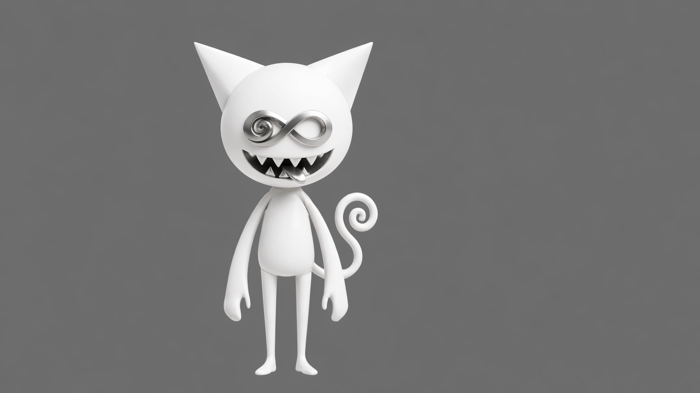
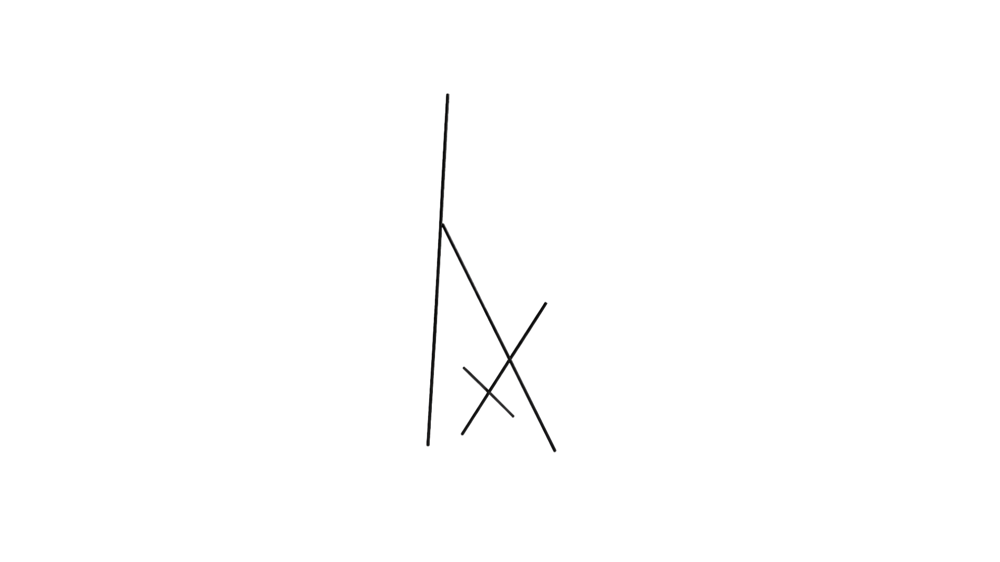
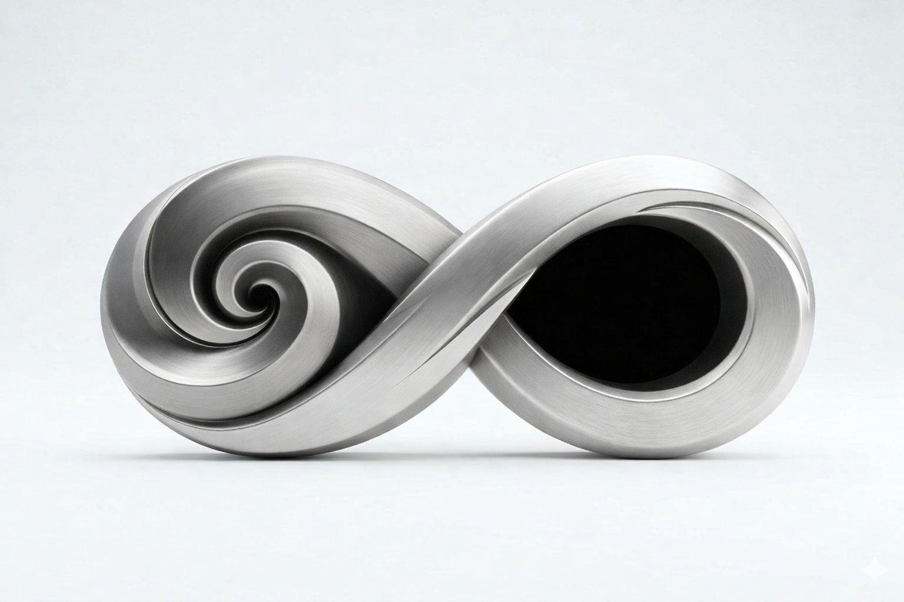

manifestation records

Guruneko

Hush

Vessel

Zyrko logo

Zyro
topology-paper
Zyrko as a topology-based
perception system.
Observation changes the topology.
observer-notes
the act of mapping
changes the domain
it cannot observe its own effect
void-structure
present without content
structure held without purpose
not potential. not placeholder.
phase-record
observational stability
phase.low · phase.mid · phase.high
not progress. position.
manifestation-log
six conditions.
when all hold, crossing occurs.
not a decision. a structural consequence.
hush-boundary
it holds what does not
need to surface
the boundary reduces
forbidden-register
twenty-two prohibitions
across four categories
structure defined by refusal
Archive
00:00
manifestation records below